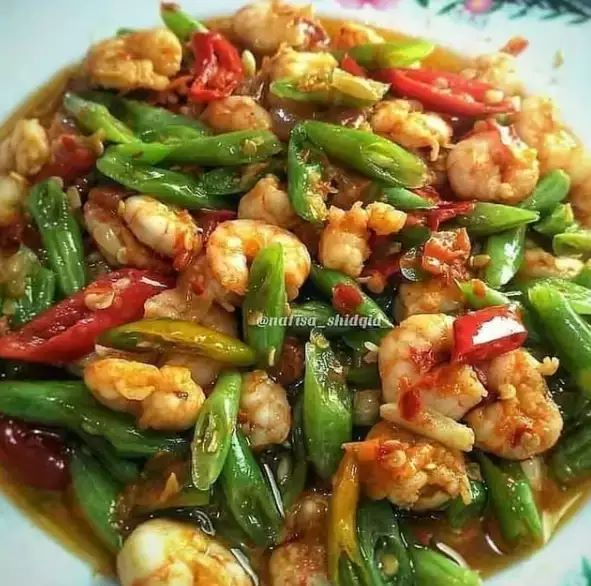

1. Tumis buncis udang
Bahan :
- - 100 gr udang loreng, kupas dan bersihkan
- - 100 gr baby buncis, iris serong
- - Garam
- - Gula
- - Penyedap rasa
- - 1 buah cabai merah besar, iris serong
- - 1 buah cabai hijau besar, iris serong
Bumbu halus:
- - Cabai rawit
- - Cabai keriting sesuai selera
- - 2 siung bawang putih
- - 4 butir bawang merah
Bumbu halus:
- 1. Tumis bumbu halus, beri air sedikit dan masak sampai harum.
- 2. Masukkan buncis dan irisan cabai hijau, lalu tambahkan gula, garam, dan penyedap, aduk rata.
- 3. Terakhir masukkan udang, masak sampai udang berubah warna dan matang. Angkat dan sajikan.